Latest exhibition · Tainan / 2026
風の前の塵。
塵のなかに避難する。
Dust before the Wind · Taking Refuge in the Dust
施叔青の小説をきっかけにパンノキを探す。台南でのフィールドワークを、写真、映像、資料、インスタレーションへ。
三浦宗民 個展 · Absence Space、不存在劇場、台南
2026.08.07–08.16
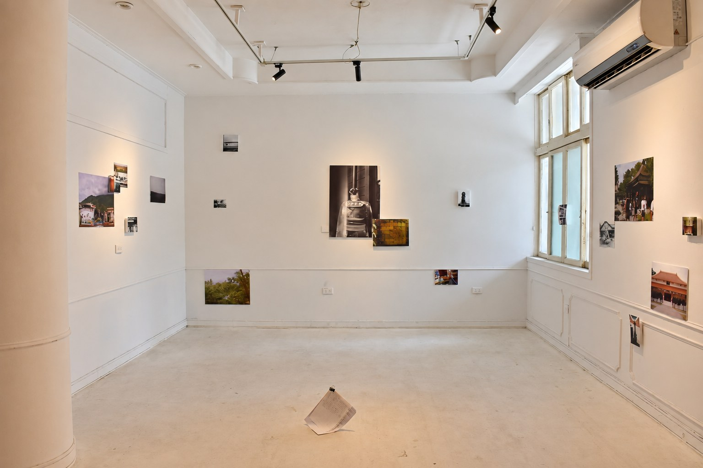
Dust before the Wind · 展示風景ABSENCE SPACE / TAINAN · 2026Selected projects
Writing / editing
庭、土地の記憶、農作業と食卓をめぐる展評。
2026.10 · NOTE / 日本語・繁體中文
Notebook
作品になる、その手前。
調査中の写真、対話のメモ、日記、未完の試み。実践の途中を残していく場所。
初回の記録は、これから選定します。
Works / publications / curatorial practice
作品・プロジェクト。
SOLO EXHIBITION / RESEARCH · 2026台南でパンノキを探すフィールドワークから。Absence Space、不存在劇場。
Books / video / research
PHOTOGRAPHY / RESEARCH · 2022
Solo exhibition / field research · 2026
Dust before the Wind
Taking Refuge in the Dust
風の前の塵・塵のなかに避難する
展示風景 · Absence Space、不存在劇場、台南 · 2026台南で暮らし始めて三か月。日本と韓国を離れ、まだ言葉に不自由のある第三の国で感じる自由と、街の中で出会う、帰ることのできない幼年期の記憶。
施叔青の小説《風前塵埃》をきっかけにパンノキを探し、フィールドワークを始めた。歴史と現在、言語と文化、そのあいだで変化するアイデンティティを、リサーチ資料、写真、映像、インスタレーションを通じて考える。
本展は、その旅の途中で得られた暫定的な応答である。
Exhibition2026年8月7日–16日 · 10:00–18:00
不存在劇場 Absence Space、台南
三浦宗民 個展
Opening / public programEating Breadfruit Together in a Pot
2026年8月9日 18:00。パンノキ料理を鍋で囲み、作品について話すオープニング。
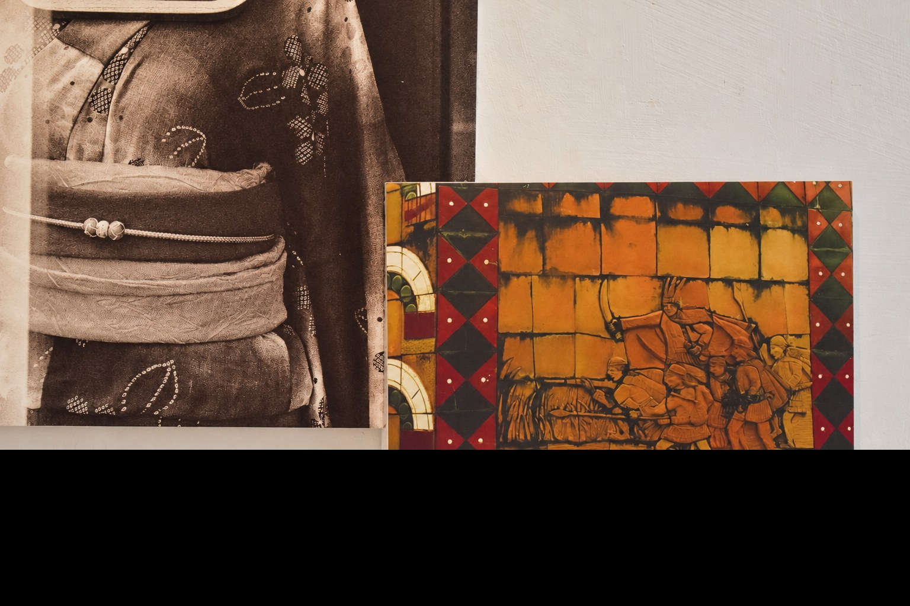
写真作品の展示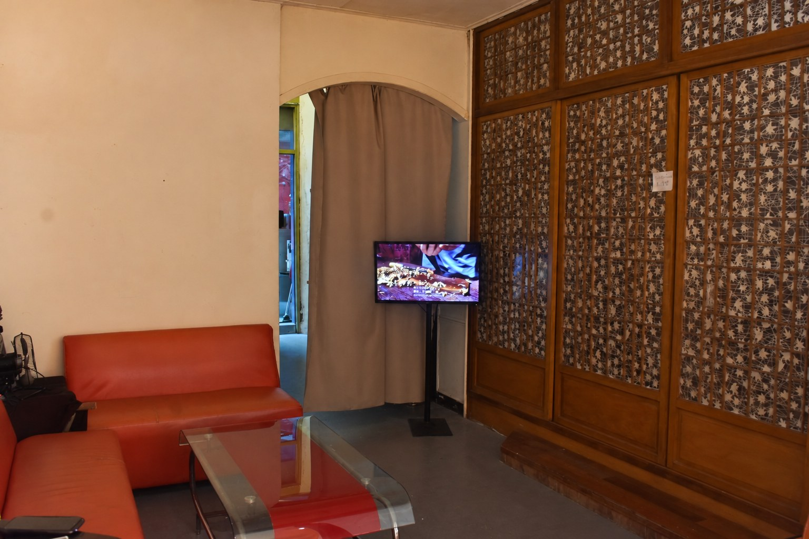
映像作品と展示空間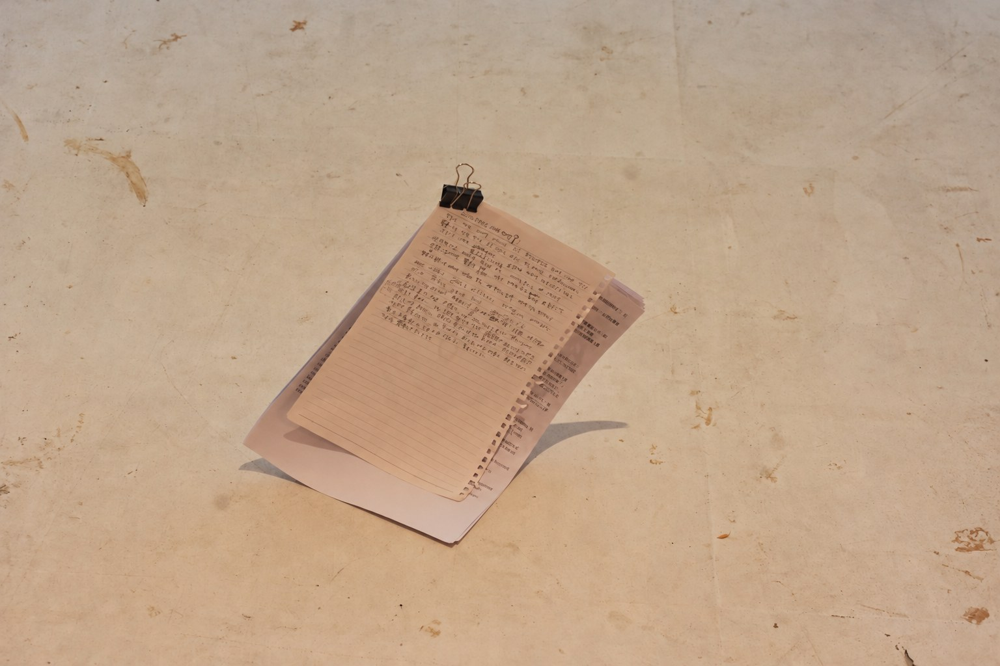
リサーチ資料の展示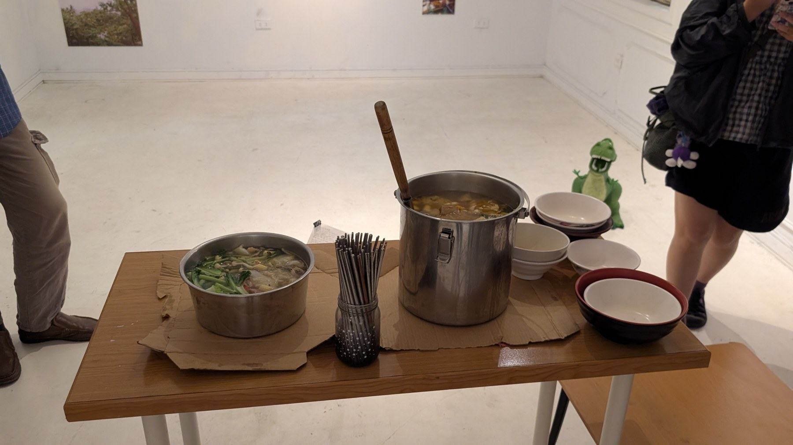
Eating Breadfruit Together in a Pot · オープニングタイトルの出発点：施叔青《風前塵埃》とGary Snyderの詩句。
展覧会告知 ↗PHOTOGRAPHY / TEXT · 2025
いつの間にか、ひまわりの名前を忘れていた
巡礼で出会った枯れたひまわりの風景を暗室で再び印画し、韓国語での花の名前を忘れていたことに気付く。写真と言語、記憶と周縁の視点をめぐる制作。
Materials / exhibition銀塩プリント、テキスト、デジタルスキャン。
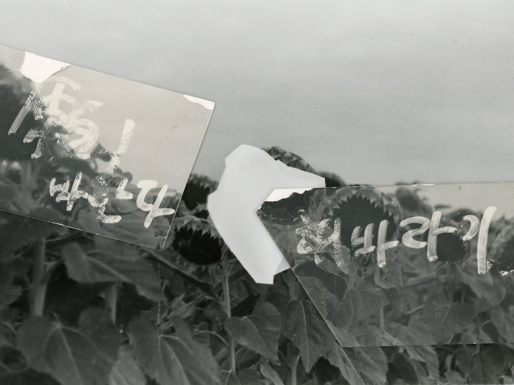
銀塩写真・テキストの再構成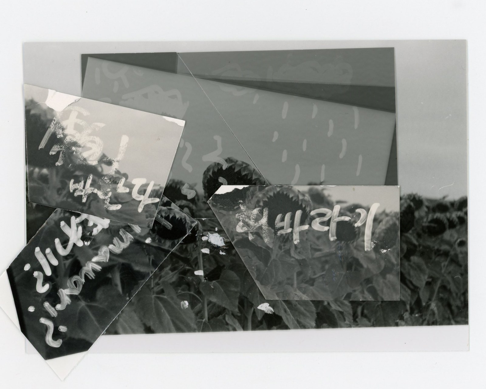
プリントとイメージの重なりFrom Another Place · 2026
異他なる場所から
中村さやかとの協働。留守の自宅の鍵を預け、直接会わない時間に交わされたメールや手紙、部屋に残された痕跡を起点に制作。カーテンの断片、サイアノタイプ、石を用い、不在を通じて他者との関係を探る。
Materials / exhibition堀川御池ギャラリー、京都。
関連記録 ↗
映像は上のYouTubeリンクからご覧いただけます。
The Study of Fragmented Time · 2026
ESCAPE

旅を通して集めた写真を、一つの物語へ回収せず、断片のまま展示空間に配置する。移動の先で出会う風景と、繰り返し浮かび上がる記憶を通して、場所に定着しない感覚を探る。
展示室に添えた生花を毎日定時にポラロイドで撮影し、壁に重ねていく。一回性の像と変化する花によって、写真の時間と、生・死・気配を感覚し続ける行為を展示へ組み込む。
Materials / exhibitionインクジェットプリント、生花、ガラス瓶、ポラロイド。京都府立文化芸術会館。「Dry Land: A Liminal Cartography」で発表。
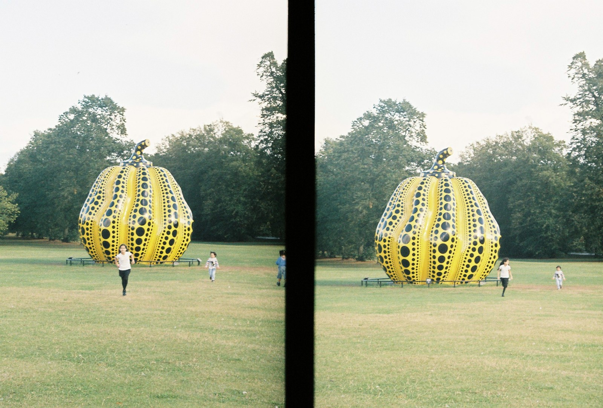
ESCAPE · 展示用写真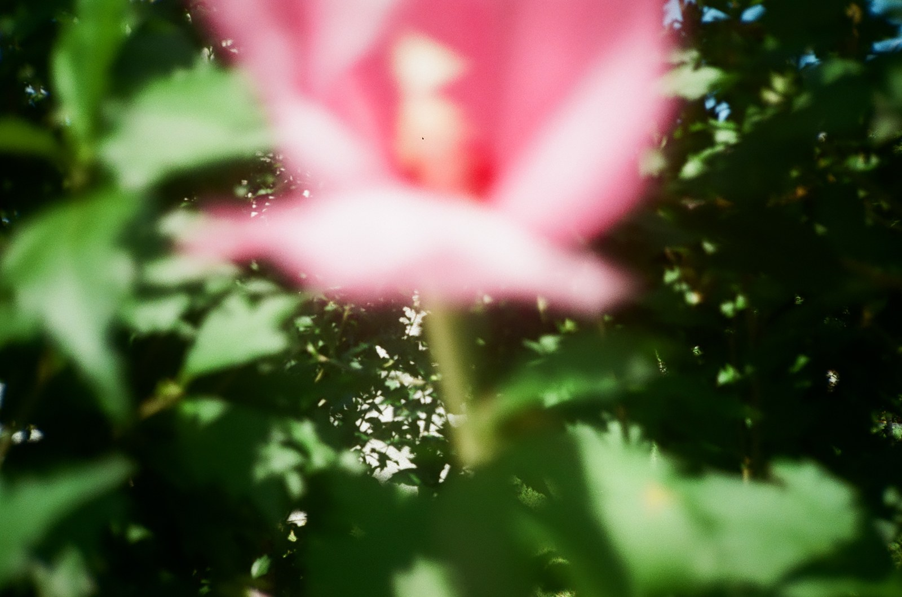
ESCAPE · 展示用写真Exhibition historyDry Land: A Liminal Cartography
乾いた土地：境界の地図学
韓日国交正常化60周年記念・現代写真交流プロジェクト。2026年1月15日–24日、京都府立文化芸術会館2F。教育・研究交流の参加作家として出展。
京都芸術大学による展覧会案内 ↗ · 展覧会の関連掲載・DBpia ↗
作品についての文章：Escape: Fragmental Studies「2017–2025」↗PHOTOBOOK / EXHIBITION · 2026
Call After
実像とイメージの距離、呼び声と気配、旅の後に引かれる道をめぐる写真集。KG＋ Portfolio Exhibitionでは、写真集のイメージを中心に壁面展示を構成。
Materials / exhibition堀川御池ギャラリー、京都。
関連記録 ↗
KG＋ Portfolio Exhibition・公式案内 ↗映像は上のYouTubeリンクからご覧いただけます。
CURATORIAL PROJECT · 2026
A Living Home, a Dead Home
家と部屋、個人の記憶から国家や世代の物語へ。同世代の写真実践を通して、私的な経験と歴史の関係を観測するキュレーション企画。
Materials / exhibition企画・キュレーション。トークとパフォーマンスによるパブリックプログラムも展開。2026年4月18日–5月17日。PELGAG、NINI ROOM（京都）。
関連記録 ↗
キュレーション企画 · 展示風景
Public program展示に加え、トークとパフォーマンスによって、写真と個人の経験、地域・歴史の関係を共有する場をつくった。
KG＋ パブリックプログラム ↗ PHOTOGRAPHY · 2026
Berlin wall
ベルリンとソウルで出会った壁を通して、国境を越えて戻ってくる記憶と、個人の経験と集団の歴史の交差を辿る。
Materials / exhibition芦屋写真展 審査員賞（竹内万里子賞）。
COLLABORATION · 2025
Delicacy at Ogijima Island
Lam Hoiyiとの協働。男木島での参加型パフォーマンスを撮影し、地域住民と作家をつなぐ。出会いと時間の痕跡を、香港での展示へと移す。
Materials / exhibitionシルク布、ファブリックプリント。香港、JCCAC。
男木島での参加型パフォーマンスの撮影と、作品写真の展示を担当。香港の賽馬会創意芸術中心（JCCAC）では、246 × 138.7 cmのシルク出力として発表。
制作・展示についての記録 ↗PHOTOBOOK · 2025
Nowhere Dreamism
旅と暮らしの中で撮影した2019–2024年の写真を、一冊の写真集に編集。写真の並びを通じて、見ることから読むことへとつながる構成を試みる。
128ページ、148 × 210 mm、300部限定。
作品・関連記録 ↗
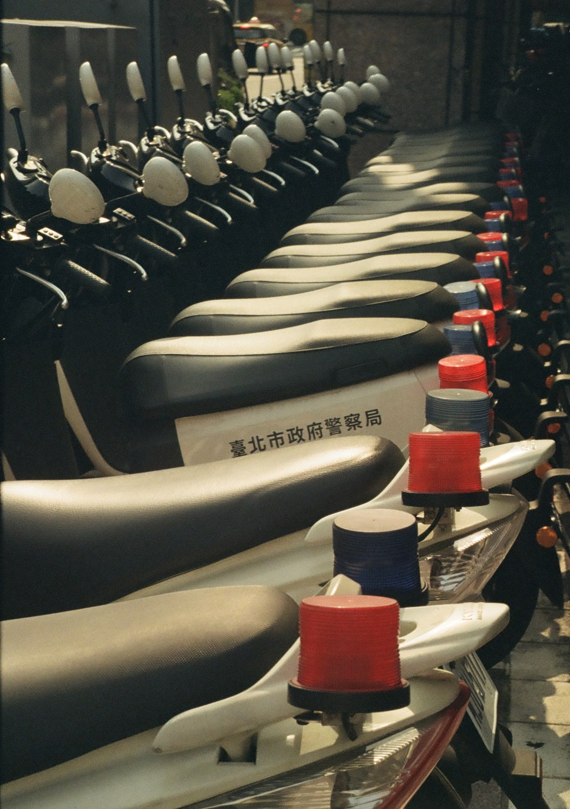
Nowhere Dreamism · 写真選集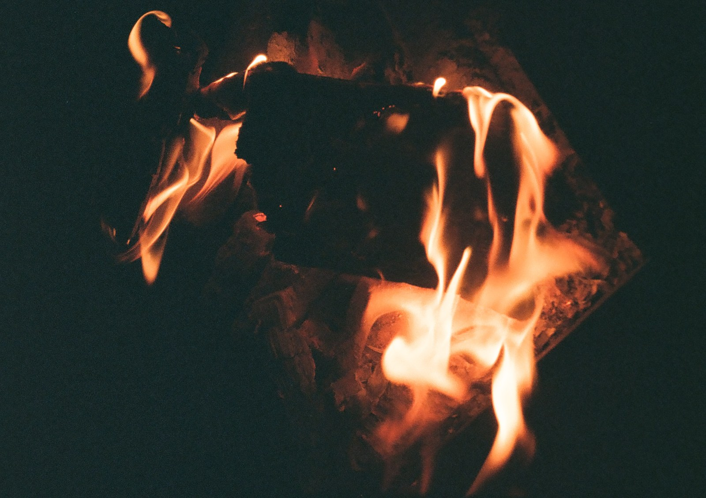
Nowhere Dreamism · 写真選集サンティアゴ・デ・コンポステーラへの巡礼を含む、複数の土地のスナップショット。地名や地図による区分を離れ、身体の移動とともに変わる記憶の地形を、写真の連なりとして構成した。ソフトカバー。
Book fairsKYOTOGRAPHIE PHOTOBOOK FAIR 2026
ブックフェアへの参加。
催事案内 ↗ VIDEO · 2025
旅立つために、ふと遡った道の上で
木浦を再訪し、過去の場所と記憶に向き合う映像作品。
作品・関連記録 ↗
久しぶりの再会をきっかけに、幼少期を過ごした街を歩き直す。遠くへ向かう移動と、同じ場所で過去へ遡る移動。その二つの方向から、現在の風景に残る記憶の輪郭を探る。
映像は上のYouTubeリンクからご覧いただけます。
PHOTOGRAPHY / DRAWING · 2026
Benjamin once wrote, every wall waits for graffiti.
写真とドローイングによる作品。
インクジェットプリント、X線で変色したポラロイド、ドローイング。
RESEARCH / PUBLIC PROGRAM · 2025
異なる世代における戦争の記憶と語り — 大久野島から考えるヒロシマ
大久野島を手がかりに、異なる世代が戦争の記憶をどのように語り、受け継ぐのかを考えるリサーチと対話のプロジェクト。
企画・ファシリテーション。戦後80年・APU開学25周年記念イベント「戦争の記憶、その美的創造性を問う ― 日本からアジア、世界へ」（2025年10月31日–11月1日）の関連セッション。
作品・関連記録 ↗
APUによる実施報告 ↗
Reviews / interviews / contributions
ライティング。
現代写真、場所、記憶、対話。外部媒体への寄稿、展示評、人物インタビューを辿る。
個人のエッセイ・日記・リサーチノートはnoteへ ↗
NEWEST FIRST / 新しい順
2026
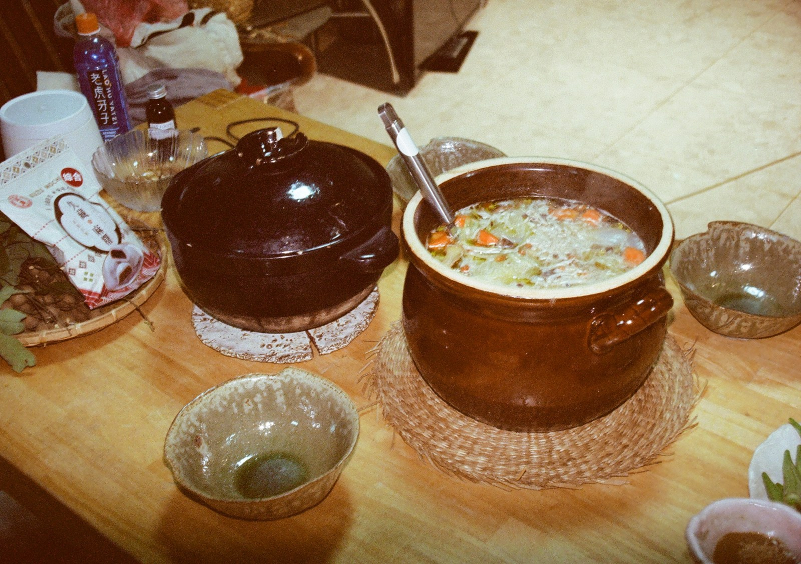
拔林の食卓 ·《同じ庭を囲んで》に関連する記録2026.10.06 · NOTE / 展示評・執筆許怡慈と好草隊の実践を、庭、土地の記憶、農作業と食卓の関係から考える。
日本語 ↗ · 繁體中文（2026.10.08） ↗
2026.08.05 · ICA KYOTO JOURNAL / 構成制作過程、キャリアの転機、Casa Wabiの活動をめぐるトークを記事として構成。
2026.06.07 · ICA KYOTO JOURNAL / 執筆・取材Faisとの再会・チェンマイ・クロニクル
2026.03.12 · 瓜生通信 / 共同執筆・編集・写真芸術館インターン生6名による共同記事。山六郎の節を奥村藍梨と共同執筆し、記事の写真を担当。
2025
2025.06.11 · DUMMY DUMPY IMAGE / 韓国語・寄稿또 다시 마주하며 엮어가는 이야기
旅、移動、言語、翻訳と写真をめぐる、前後編のエッセイ。写真集『Nowhere Dreamism』を起点に、記憶と再会から制作を考える。
上編（상）↗ · 下編（하）↗
2025.04.08–04.22 · KURASU × KYOTOGRAPHIE / 企画・取材・構成・執筆交差点でHumanityを探る
ロースター、アーティスト、キュレーター。4名への共通の問いを通して、人間らしさと創造性を探るインタビューシリーズ。
2025.04.22 · Vol.4 · 仲西祐介 2025.04.08 · Vol.1 · 大塚拓也 関連クロストーク映像 ↗
2023
2023 · KURASU JOURNAL / 人物インタビュー・執筆山梨で店を営む寺崎さんの歩み、地域とのつながり、コーヒーとの出会い、次世代への思いを紹介。
Notebook / ongoing practice
途中にあるもの。
調査中の写真、対話、日記。作品ページとは別に、現在の実践を残していく場所。
About / selected CV
Jong
三浦宗民
2000年、青森県五戸町生まれ。韓国・木浦市で育つ。京都と台南を拠点に活動するアートプラクティショナー。
アジアの地域・言語・文化を横断し、個人と集団の記憶、記録の交差に関心を持つ。現代写真を中心に、リサーチ、執筆、出版、企画、通訳・翻訳を通じた実践を行う。
Education2026 京都芸術大学大学院 修士課程修了
2023 立命館アジア太平洋大学 卒業
Awards2026 芦屋写真展 竹内万里子賞
2026 APA AWARD 入選
2021 安藤百福名誉博士奨励賞
Research2022年度秋 APS優秀論文選出
「写真的知覚の進化：「現代写真論」現代写真芸術のゆくえ 消費社会における写真家のテーゼ、杉本博司の作品を通した考察」
APU公式タイトル集 ↗ Talks / media appearances
2026.02.17 / PODCAST · ゲスト出演いい写真ラジオ #24
制作、研究、境界、歴史との向き合い方についての対話。
Spotifyで聴く ↗
Chronological index / 2026–2017
実践の年表。
詳細は各作品・執筆・仕事のページに集約しています。
2026
仕事 / 継続中
ライティング / 10月
公開対話 / 2月
2025
ライティング / 6月
2024
研究・教育
2023
教育
2022
作品・展示 / 写真・リサーチ
入選第20回記念JPA公募展 / 芦屋写真展2022
2021
受賞
2018–2020
仕事 / 企画・運営
2017
仕事 / 番組企画・制作
Commissioned work / brand storytelling
仕事。
NEWEST FIRST / 新しい順・継続中から
依頼・協働による企画、編集、進行管理、ストーリーテリング。
2026–ONGOING · CIZUCU / GLOBAL INTERVIEW PROJECTcizucuのグローバルインタビュープロジェクトで、企画・取材・編集と進行管理を担当。異なる地域で活動する写真家へのインタビューを通じて、それぞれの制作と思考を届ける。
世界各地の写真家・ビジュアルアーティスト・キュレーター・写真メディアに、共通する「10の質問」から制作の原点と思想を聞くインタビュー企画。個人の実践から写真文化を支える場まで、異なる立場の声を届ける。
担当した代表記事
2026.10.05 · ISSUE #2962026.09.11 · ISSUE #2832026.05.13 · ISSUE #214 2026
2026 · DOUBLE ANNUAL / 編集・執筆Gatherum News
DOUBLE ANNUAL 2026にアート・プラクティショナーとして参加。広報誌「Gatherum News」の編集・執筆を担当。
本展「遠くへ旅する者は多くの物語を語ることができる？ / Long Ways, Long Lies?」は、2026年2月21日–3月1日、国立新美術館で開催。
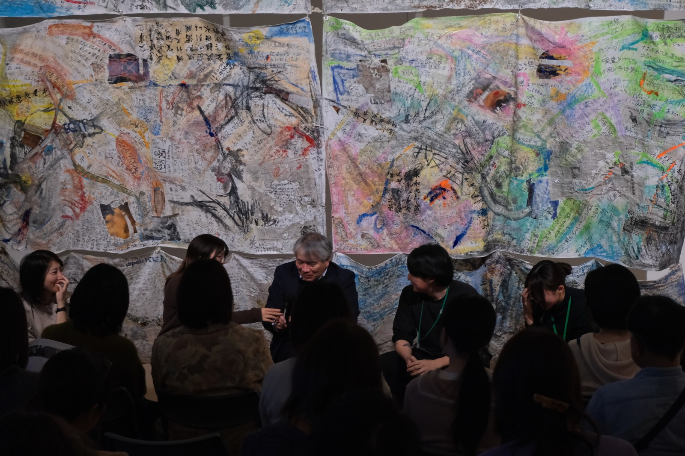
GATHERUM TALK · 関連プログラムの記録DOUBLE ANNUAL 2026・公式アーカイブ ↗ 過去の仕事 / 2025
2025 · KURASU × KYOTOGRAPHIE / 編集・コンテンツ制作交差点でHumanityを探る
インタビューシリーズと関連映像の企画・制作。
EXHIBITION / EDITORIAL PRACTICE · 2025コーヒーの暮らしにあるB面
Kurasuのスタッフが撮影した日常の写真を集め、仕事の背景にある視点を壁面展示へ編集。
2025 · KURASU / 執筆コーヒーの欠点から、その背景にいる人々と生産地へ目を向ける文章。
実践の起点 / 2018–2020
企画・運営 / 2018–2020ものがたり喫茶
コーヒーを介した居場所づくり。学校、大学、学生寮、子ども食堂などで場をひらき、2020年には手紙とドリップバッグを郵送する取り組みを行った。
2017
札幌国際芸術祭2017 / 番組企画・制作狸小路TVスタジオ
「私たちの札幌国際芸術祭〜外国籍生徒による自国語リポート・アートサミット」。外国にルーツをもつ高校生による、母語での芸術祭リポートと対話を企画・制作。
番組を見る ↗ PHOTOGRAPHY / RESEARCH · 2022
紡ぐ、鉄輪展。
別府・鉄輪温泉街に残る写真や証言をたどり、地域の暮らしと記憶を編み直すリサーチをもとにした写真展。湯治場としての共同体の歴史と声に向き合い、地域と来訪者をつなぐ場をつくる。
2022年 · Scrap & Build Gallery、別府。